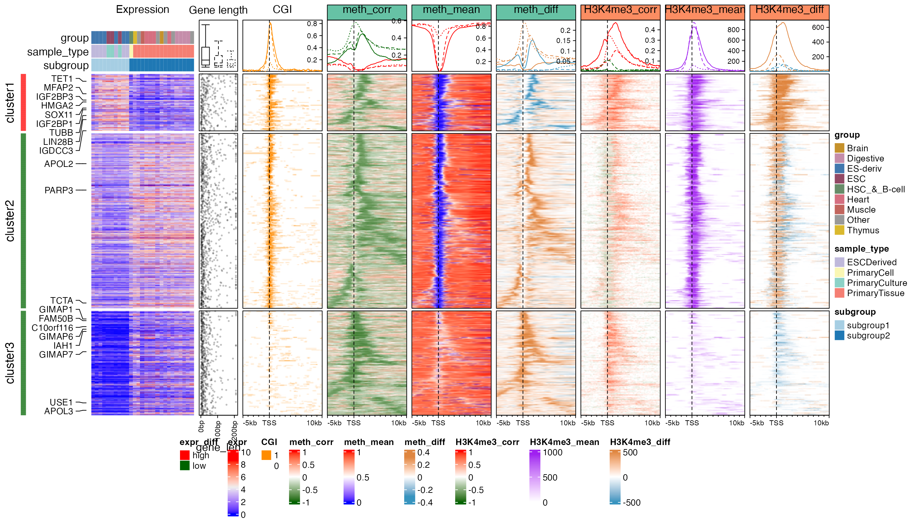
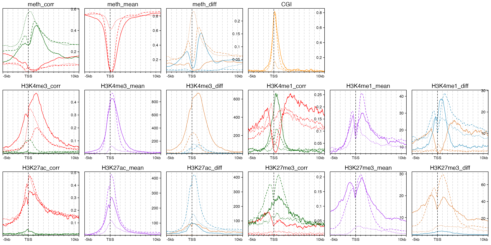
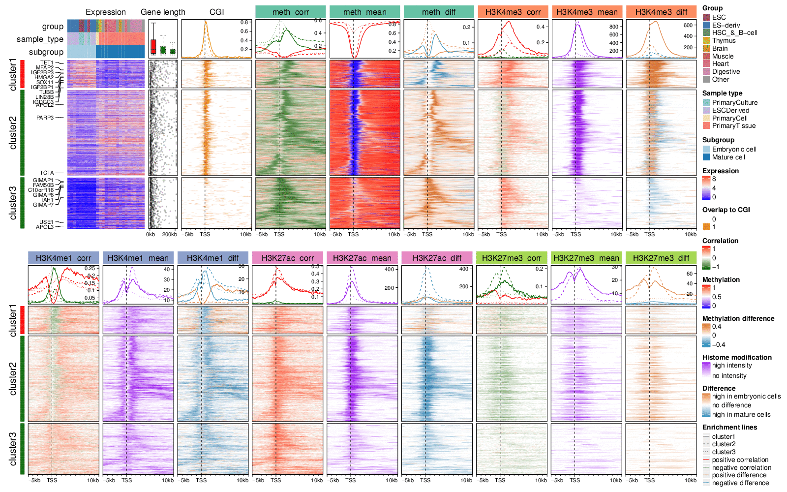

vignettes/roadmap.Rmd
roadmap.RmdVisualize Comprehensive Associations in Roadmap dataset
Author: Zuguang Gu ( z.gu@dkfz.de )
Date: 2019-09-29
In this vignette we visualize comprehensive associations between various epigenomic signals from Roadmap dataset. Here, we describe the methods and configurations used for visualizing the complicated associations.
The preprocessing of Roadmap data to fit into the analysis is relatively complex and is out of the scope of this package, thus here we only briefly describe the methods we use to process the data, while provide more details for the visualization part.
First load R packages and pre-calculated R objects which we will explain in later sections.
library(EnrichedHeatmap)
library(GetoptLong)
library(circlize)
library(RColorBrewer)
download.file("https://jokergoo.github.io/supplementary/EnrichedHeatmap-supplementary/roadmap_normalized_matrices.RData",
destfile = "roadmap_normalized_matrices.RData")
load("roadmap_normalized_matrices.RData")
file.remove("roadmap_normalized_matrices.RData")General overview
Roadmap dataset (http://egg2.wustl.edu/roadmap/web_portal/) covers various human cell types and tissues and has been uniformly processed. The dataset provides whole genome bisulfite sequencing data for DNA methylation, RNA sequencing data for gene expression and ChIP sequencing data for various histone modifications.
As we observed, gene expression shows stronger correlation pattern with DNA methylation compared to histone modifications, thus, the whole integrative analysis is centered by gene expression and methylation, with associating other histone modification signals, or in another words, we first look for regions where gene expression and methylation is correlated, and as a second step we check how histone modification signals correlate or anti-correlate to these correlated regions.
For the Roadmap dataset, we only use 27 samples which have both matched expression and methylation data with high data quality and have consistent subgrouping in both expression and methylation datasets (results from an unpublished analysis). Here SAMPLE contains annotations for samples under use and COLOR contains the corresponding colors for annotations.
SAMPLE## id group sample_type subgroup
## E016 E016 ESC PrimaryCulture subgroup1
## E003 E003 ESC PrimaryCulture subgroup1
## E024 E024 ESC PrimaryCulture subgroup1
## E007 E007 ES-deriv ESCDerived subgroup1
## E013 E013 ES-deriv ESCDerived subgroup1
## E012 E012 ES-deriv ESCDerived subgroup1
## E011 E011 ES-deriv ESCDerived subgroup1
## E004 E004 ES-deriv ESCDerived subgroup1
## E005 E005 ES-deriv ESCDerived subgroup1
## E006 E006 ES-deriv ESCDerived subgroup1
## E050 E050 HSC_&_B-cell PrimaryCell subgroup2
## E112 E112 Thymus PrimaryTissue subgroup2
## E071 E071 Brain PrimaryTissue subgroup2
## E100 E100 Muscle PrimaryTissue subgroup2
## E104 E104 Heart PrimaryTissue subgroup2
## E095 E095 Heart PrimaryTissue subgroup2
## E105 E105 Heart PrimaryTissue subgroup2
## E065 E065 Heart PrimaryTissue subgroup2
## E109 E109 Digestive PrimaryTissue subgroup2
## E106 E106 Digestive PrimaryTissue subgroup2
## E079 E079 Digestive PrimaryTissue subgroup2
## E094 E094 Digestive PrimaryTissue subgroup2
## E097 E097 Other PrimaryTissue subgroup2
## E066 E066 Other PrimaryTissue subgroup2
## E098 E098 Other PrimaryTissue subgroup2
## E096 E096 Other PrimaryTissue subgroup2
## E113 E113 Other PrimaryTissue subgroup2COLOR## $group
## ESC ES-deriv HSC_&_B-cell Thymus Brain Muscle Heart
## "#924965" "#4178AE" "#678C69" "#DAB92E" "#C5912B" "#C2655D" "#D56F80"
## Digestive Other
## "#C58DAA" "#999999"
##
## $sample_type
## PrimaryCulture ESCDerived PrimaryCell PrimaryTissue
## "#8cd2c7" "#bfb9db" "#faf7b4" "#f57f73"
##
## $subgroup
## subgroup1 subgroup2
## "#A6CEE3" "#1F78B4"The 27 samples are separated into two subgroups (labeled as subgroup column in SAMPLE) where one subgroup (subgroup1) corresponds to embryonic stem cells and the other subgroup (subgroup2) corresponds to primary tissues or mature cells. Samples in the two subgroups show distinct difference in both expression and methylation datasets (results from an unpublished analysis).
In this supplementary, we visualize the enrichment of various epigenomic signals around gene TSS with upstream 5kb and downstream 10kb. All epigenomic signals have already been normalized to gene TSS and stored as R objects because the calculation for the matrices involves complicated data preprocessing and normalizing all datasets to gene TSS is time comsuing. However, we will still provide pseudo code which generates these normalized matrices.
All epigenomic signals are normalized to gene TSS with same settings (upstream 5kb, downstream 10kb, window size 50bp), thus, all normalized matrices have the same dimension and row order, and i^th row, j^th column in all matrices correspond to a same position relative to a same gene.
There are following pre-calculated normalized matrices. Here we only simply describe these objects and details for generating them will be explained in later sections.
-
mat_neg_cr: a normalized matrix for correlated regions (CRs, The definition of CR is introduced in following sections) showing significant negative correlation between methylation and gene expression. The value in the matrix is whether a window is covered by negative CRs (values are 0 or 1). -
meth_mat_corr: a normalized matrix for all CRs. The value in the matrix is the mean correlation for CRs overlapped to a window. -
meth_mat_mean: a normalized matrix for mean methylation across all samples. -
meth_mat_diff: a normalized matrix for mean methylation difference between two subgroups. -
mat_cgi: a normalized matrix for CpG islands. The value in the matrix is whether a window is covered by CGIs. -
hist_mat_corr_list: a list of normalized matrices for the correlation between histone modification signals and gene expression. Each matrix corresponds to one type of histone modification. -
hist_mat_mean_list: a list of normalized matrices for the mean histone modification signals across all samples. -
hist_mat_diff_list: a list of normalized matrices for the histone modification signal difference between two subgroups.
Other R objects are
-
gene: AGRangesobject which contains positions of genes. -
tss: AGRangesobject which contains positions of gene TSS. -
gene_symbola mapping between Ensembl IDs and gene symbols. -
expr: gene expression matrix (Values are measured bylog2(RPKM + 1)).
tss and expr also have the same row order as normalized matrices.
Association between gene expression and methylation
When looking for associations between DNA methylation and gene expression, the process is gene centric. We briefly describe the method as follows:
Each gene is extended to upstream 50kb and downstream 50kb to the full gene body. For each extended gene, we use a 6-CpG sliding window with step of 3 CpGs and with maximum window size of 10kb. In each window, mean methylation is calculated from the 6-CpG sites and the Spearman correlation as well as the correlaion test to expression of the current gene is calculated. We term these 6 CpG windows as correlated regions (CRs) and significant CRs are filterred by FDR < 0.05 (from the correlation test) and methylation difference between the two subgroups are larger than 0.2.
According to this procedure, each CR belongs to one certain gene, which means, there is a mapping between CRs and genes. Thus when normalizing CRs to TSS, this mapping should be provided so that CRs can be correctly normalized to their host genes. Or else there can be scenarios that two extended genes overlap to each other and one CR of gene A also overlaps to gene B. If the mapping is not provided, this CR will be wrongly mapped to gene B.
Assume cr contains CRs for all 6-CpG windows and the gene name column is named as gene_id, the correlation column is named as corr, following code normalizes CRs to TSS.
# this chunk of code is only for demonstration
mat_corr = normalizeToMatrix(cr, tss, mapping_column = "gene_id", value_column = "corr",
mean_mode = "absolute", ...)Assume sig_neg_cr contains CRs showing significant negative correlations to expression, following code normalizes significant negative CRs to TSS. Note there is no value_column in following code so that the normalized matrix measures whether each window is covered by sig_neg_cr.
# this chunk of code is only for demonstration
mat_neg_cr = normalizeToMatrix(sig_neg_cr, tss, mapping_column = "gene_id",
mean_mode = "absolute", ...)The correlation itself does not tell the methylation level (highly methylated or lowly methylated) nor the variability of methylation among samples. In order to get a more comprehensive view of the methylation, we also normalize mean methylation and methylation variability to TSS. Methylation data represents as a matrix where rows are CpG sites and columns are samples, thus we directly calculate mean methylation among samples with row means, then normalize the mean methylation to gene TSS.
In following code, assume meth is a GRanges object of CpG sites and meta data columns contain methylation matrix for all samples.
# this chunk of code is only for demonstration
meth_mean = meth
mcols(meth_mean) = data.frame(mean_meth = rowMeans(mcols(meth)))
meth_mat_mean = normalizeToMatrix(meth_mean, tss, value_column = "mean_meth",
mode = "absolute", ...)And the mean methylation difference is calculated as \(m_1 - m_2\) where \(m_1\) is the mean methylation matrix in subgroup 1 and \(m_2\) is the mean methylation in subgroup 2.
# this chunk of code is only for demonstration
meth_mean_1 = meth
mcols(meth_mean_1) = data.frame(mean_meth = rowMeans(mcols(meth[, SAMPLE$subgroup == "subgroup1"])))
meth_mat_mean_1 = normalizeToMatrix(meth_mean_1, tss, value_column = "mean_meth",
mode = "absolute", ...)
meth_mean_2 = meth
mcols(meth_mean_2) = data.frame(mean_meth = rowMeans(mcols(meth[, SAMPLE$subgroup == "subgroup2"])))
meth_mat_mean_2 = normalizeToMatrix(meth_mean_2, tss, value_column = "mean_meth",
mode = "absolute", ...)
meth_mat_diff = meth_mat_mean_1 - meth_mat_mean_2Since CRs are detected in upstream 50kb and downstream 50kb of the full gene, while for the visualizaiton, only upstream 5kb and downstream 10kb of TSS are used, genes which do not have a significant negative CR in [-5kb, 10kb] of TSS are removed (can be filtered by rowSums(mat_neg_cr) > 0), which finnally results in 1832 genes for the analysis.
length(tss)## [1] 1832Association with histone modifications
We use following four types of histone modifications which show specific patterns at gene TSS: H3K4me1, H3K4me3, H3K27ac and H3K27me3. Similar as methylation, for each type of histone modification, there are three matrices which are 1. correlation to gene expression; 2. mean signals across all samples; and 3. the mean signal difference between two subgroups.
Being different from methylation datasets, the peak regions of histone modification data across all samples cannot locate at a same genomic position which makes it naturelly not a matrix-like data. To format it, we normalize signals to gene TSS for eash sample separately, which generates a list of matrices with same dimensions and settings.
Assume peak is a list of GRanges objects for peak regions in different samples. In following, we additionally set keep = c(0, 0.99) to adjust outlier values which are larger than 99th percentile.
# this chunk of code is only for demonstration
for(i in n_sample) {
# assume the column name for the signals is called 'density'
hm_list[[i]] = normalizeToMatrix(peak[[i]], tss, value_column = "density", keep = c(0, 0.99))
}If we compress the list of matrices as a three-dimension array where the first dimension corresponds to genes, the second dimension corresponds to windows and the third dimension corresponds to samples, the mean signal across all sample can be calculated on the third dimension. Here getSignalsFromList() simplifies this job.
# this chunk of code is only for demonstration
hm_mat_mean = getSignalsFromList(hm_list, mean)The mean difference between two subgroups can be calculated in a similar way:
# this chunk of code is only for demonstration
# hm_list_1 and hm_list_2 are normalized matrices for subgroup1 and subgroup2 separatedly
hm_mat_mean_1 = getSignalsFromList(hm_list_1, mean)
hm_mat_mean_2 = getSignalsFromList(hm_list_2, mean)
hm_mat_diff = hm_mat_mean_1 - hm_mat_mean_2The correlation between histone modification and gene expression can also be calculated on the third dimension of the array. In the user-defined function fun, x is the vector for gene i and window j in the array, and i is the index of current gene.
# this chunk of code is only for demonstration
hm_corr = getSignalsFromList(hm_list, fun = function(x, i) {
cor(x, expr[i, ], method = "spearman") # x = array[i, j, ]
})We apply this method on all four types of histone modifications and normalized matrices are stored as hist_mat_corr_list, hist_mat_mean_list and hist_mat_diff_list. All three objects are list of four matrices.
normalize CGI to gene TSS
Normalizing CpG islands to TSS is straightforward. The value in the normalized matrix is whether each window is covered by CpG islands.
# this chunk of code is only for demonstration
mat_cgi = normalizeToMatrix(cgi, tss, mean_mode = "absolute", ...)Order and group genes
The ordering of genes and sometimes separating genes into several groups are important to strenghen the effect of visualization of the patterns. Especially when we have multiple heatmaps which share same row order, a proper way to order genes is more important to highlight patterns for all heatmaps.
Which method to order genes depends on what pattern users want to reveal. In this analysis, the message we want to show from the heatmaps are 1. the enrichment of significantly negatively correlated regions (negCRs) around TSS; 2. the difference between subgroup 1 and subgroup 2; and 3. the different methylation patterns for different genes. The following procedures shows how we group genes and how we order genes for better showing these patterns.
The expression difference between subgroup 1 and subgroup 2 samples is a major grouping factor. We construct a category vector which corresponds to high expression and low expression in subgroup 1.
expr_mean = rowMeans(expr[, SAMPLE$subgroup == "subgroup1"]) -
rowMeans(expr[, SAMPLE$subgroup == "subgroup2"])
expr_split = ifelse(expr_mean > 0, "high", "low")
expr_split = factor(expr_split, levels = c("high", "low"))After looking at the methylation data, we found the methylation shows big difference between genes and the major difference happens at small areas around TSS and flanks more to the downstream of TSS. Thus, we only extract 20% of upstream of TSS and 40% of downstream of TSS and use methylation to separate genes into two subgroups which are low TSS-methylation group and high TSS-methylation group.
The label of methylation groups are adjsuted that the first group always has lowest mean TSS-methylation.
set.seed(123)
upstream_index = length(attr(meth_mat_mean, "upstream_index"))
meth_split = kmeans(meth_mat_mean[, seq(round(upstream_index*0.8), round(upstream_index*1.4))],
centers = 2)$cluster
x = tapply(rowMeans(meth_mat_mean[, seq(round(upstream_index*0.8), round(upstream_index*1.4))]),
meth_split, mean)
od = structure(order(x), names = names(x))
meth_split = paste0("cluster", od[as.character(meth_split)])Both grouping from expression and methylation is important, thus To make a more informative grouping of genes, the split from expression and methylation are combined:
combined_split = paste(meth_split, expr_split, sep = "|")There is one combined group with too few number of genes
tb = table(combined_split)
tb## combined_split
## cluster1|high cluster1|low cluster2|high cluster2|low
## 306 940 25 561tb["cluster2|high"]/sum(tb)## cluster2|high
## 0.01364629The proprotion of “cluster2|high” group is too small and also we don’t want to make too many row clusters, in order to make the plot more clear, “cluster2|high” is removed from the analysis.
Also all related variables should be subsetted to remove “cluster2|high” genes.
l = combined_split != "cluster2|high"
tss = tss[l]
expr = expr[l, ]
hist_mat_corr_list = lapply(hist_mat_corr_list, function(x) x[l, ])
hist_mat_mean_list = lapply(hist_mat_mean_list, function(x) x[l, ])
hist_mat_diff_list = lapply(hist_mat_diff_list, function(x) x[l, ])
mat_neg_cr = mat_neg_cr[l, ]
mat_cgi = mat_cgi[l, ]
meth_mat_corr = meth_mat_corr[l, ]
meth_mat_mean = meth_mat_mean[l, ]
meth_mat_diff = meth_mat_diff[l, ]
expr_split = expr_split[l]
meth_split = meth_split[l]
combined_split = combined_split[l]
n_row_cluster = length(unique(combined_split))Next we calculate row order, following is a way which shows clear patterns for all signals.
From heatmaps which we show later, there is a clear pattern that the negCRs are enriched at consistent positions downstream of TSS. To show this specific pattern, we designed a specific distance metric which calculates how close the negCRs on two genes are based on relative distance to TSS.
For two rows in the normalized matrix, assume \(a_1, a_2, ..., a_{n_1}\) are the window indices for one gene which overlaps with negative correlated regions and \(b_1, b_2, ... b_{n_2}\) are the indices for the other gene, the distance which is based on closeness of the overlapped windows in the two genes is defined as:
\[ d_{closeness} = \frac{\sum_{i=1}^{n_1} \sum_{j=1}^{n_2} {|a_i - b_j|}}{n_1 \cdot n_2}\]
Following code calculates row orders for genes. For each row cluster split by combined_split, rows are clustered separately. In following code, l_list is a logical partition of genes and for each row cluster.
merge_row_order = function(l_list) {
do.call("c", lapply(l_list, function(l) {
if(sum(l) == 0) return(integer(0))
if(sum(l) == 1) return(which(l))
dend1 = as.dendrogram(hclust(dist_by_closeness(mat_neg_cr[l, ])))
dend1 = reorder(dend1, -enriched_score(mat_neg_cr[l, ]))
od = order.dendrogram(dend1)
which(l)[od]
}))
}
row_order = merge_row_order(list(
combined_split == "cluster1|high",
combined_split == "cluster1|low",
combined_split == "cluster2|low"
))Organize heatmaps
After all matrics are generated, we can generate the complex heatmap list.
First we prepare the heatmap for expression. The columns of expression matrix are only clustered for each subgroup.
dend1 = as.dendrogram(hclust(dist(t(expr[, SAMPLE$subgroup == "subgroup1"]))))
hc1 = as.hclust(reorder(dend1, colMeans(expr[, SAMPLE$subgroup == "subgroup1"])))
expr_col_od1 = hc1$order
dend2 = as.dendrogram(hclust(dist(t(expr[, SAMPLE$subgroup == "subgroup2"]))))
hc2 = as.hclust(reorder(dend2, colMeans(expr[, SAMPLE$subgroup == "subgroup2"])))
expr_col_od2 = hc2$order
expr_col_od = c(which(SAMPLE$subgroup == "subgroup1")[expr_col_od1],
which(SAMPLE$subgroup == "subgroup2")[expr_col_od2])The first heatmap is the expression which is a normal heatmap where we put sample annotations on top.
ht_list = Heatmap(expr, name = "expr", show_row_names = FALSE,
show_column_names = FALSE, width = unit(4, "cm"), show_column_dend = FALSE,
cluster_columns = FALSE, column_order = expr_col_od,
top_annotation = HeatmapAnnotation(df = SAMPLE[, -1], col = COLOR,
annotation_name_side = "left"),
column_title = "Expression", column_title_gp = gpar(fontsize = 12),
show_row_dend = FALSE, use_raster = TRUE)We extract top 20 genes with most significant p-values simply by t-test.
library(genefilter)
df = rowttests(expr, factor(SAMPLE$subgroup))
top_genes = rownames(df[order(df$p.value)[1:20], ])These top genes are added as a text annotation.
index = which(rownames(expr) %in% top_genes)
labels = gene_symbol[rownames(expr)[index]]
ht_list = rowAnnotation(sig_gene = anno_mark(at = index, labels = labels,
side = "left", labels_gp = gpar(fontsize = 10), padding = 0.5,
extend = unit(c(1, 0), "cm"))) + ht_listOn the right side of the expression is a row annotation which show the length of genes, constructed by rowAnnotation() function and appended to the heatmap list.
gl = width(gene[names(tss)])
gl[gl > quantile(gl, 0.95)] = quantile(gl, 0.95)
ht_list = ht_list + rowAnnotation(gene_len = anno_points(gl, size = unit(1, "mm"),
gp = gpar(col = "#00000040"),
axis_param = list(at = c(0, 1e5, 2e5), labels = c("0bp", "100bp", "200bp")),
width = unit(1.5, "cm")))Add the heatmap which shows enrichment of CGI to TSS. Top annotation which shows enrichment pattern is added by anno_enriched() function.
axis_name = c("-5kb", "TSS", "10kb")
ht_list = ht_list + EnrichedHeatmap(mat_cgi, col = c("white", "darkorange"), name = "CGI",
column_title = "CGI", column_title_gp = gpar(fontsize = 12),
top_annotation = HeatmapAnnotation(lines = anno_enriched(gp = gpar(col = "darkorange",
lty = 1:n_row_cluster), axis_param = list(side = "right", facing = "inside"))),
axis_name = axis_name, axis_name_gp = gpar(fontsize = 8), use_raster = TRUE) Add the heatmap which shows the correlation between methylation and expression. Since in the normalized matrix meth_mat_corr, there are positive correlations and negative correlations, both pos_col and neg_col are set so that enrichment for positive correlation and negative correlation are drawn separately in the top annotation.
bg_col = brewer.pal(8, "Set2")
cor_col_fun = colorRamp2(c(-1, 0, 1), c("darkgreen", "white", "red"))
ht_list = ht_list + EnrichedHeatmap(meth_mat_corr, col = cor_col_fun, name = "meth_corr",
top_annotation = HeatmapAnnotation(lines = anno_enriched(gp = gpar(pos_col = "red",
neg_col = "darkgreen", lty = 1:n_row_cluster),
axis_param = list(side = "right", facing = "inside"))),
column_title = "meth_corr", column_title_gp = gpar(fontsize = 12, fill = bg_col[1]),
axis_name = axis_name, axis_name_gp = gpar(fontsize = 8), use_raster = TRUE)Add the heatmap which shows mean methylation among all samples.
meth_col_fun = colorRamp2(c(0, 0.5, 1), c("blue", "white", "red"))
ht_list = ht_list + EnrichedHeatmap(meth_mat_mean, col = meth_col_fun, name = "meth_mean",
column_title = "meth_mean", column_title_gp = gpar(fontsize = 12, fill = bg_col[1]),
top_annotation = HeatmapAnnotation(lines = anno_enriched(gp = gpar(col = "red",
lty = 1:n_row_cluster), axis_param = list(side = "right", facing = "inside"))),
axis_name = axis_name, axis_name_gp = gpar(fontsize = 8), use_raster = TRUE)For the heatmap showing difference between subgroups, we define a function which generate color mappings showing symmetric color mapping for positive difference and negative difference. This works for both methylation difference and histone modification difference.
generate_diff_color_fun = function(x) {
q = quantile(x, c(0.05, 0.95))
max_q = max(abs(q))
colorRamp2(c(-max_q, 0, max_q), c("#3794bf", "#FFFFFF", "#df8640"))
}
ht_list = ht_list + EnrichedHeatmap(meth_mat_diff, name = "meth_diff",
col = generate_diff_color_fun(meth_mat_diff),
column_title = "meth_diff", column_title_gp = gpar(fontsize = 12, fill = bg_col[1]),
top_annotation = HeatmapAnnotation(lines = anno_enriched(gp = gpar(pos_col = "#df8640",
neg_col = "#3794bf", lty = 1:n_row_cluster),
axis_param = list(side = "right", facing = "inside"))),
axis_name = axis_name, axis_name_gp = gpar(fontsize = 8), use_raster = TRUE)Since here in the final heamtap list, there are 17 heatmaps which are too many to put in one row layout. Thus, we separate the heatmaps into two and assign them to ht_list_1 and ht_list_2. In following code, the heatmaps for the last three histone modifications are assigned to the second heatmap list.
ht_list_2 = NULL
ht_list_1 = NULL
mark_name = names(hist_mat_corr_list)
for(i in seq_along(hist_mat_corr_list)) {
# heatmaps for the 2nd, 3th and 4th histone modifications are assigned to a new `ht_list`
if(i == 2) {
ht_list_1 = ht_list
ht_list = NULL
}
ht_list = ht_list + EnrichedHeatmap(hist_mat_corr_list[[i]], col = cor_col_fun,
name = qq("@{mark_name[i]}_corr"), column_title = qq("@{mark_name[i]}_corr"),
column_title_gp = gpar(fontsize = 12, fill = bg_col[i+1]),
top_annotation = HeatmapAnnotation(lines = anno_enriched(gp = gpar(pos_col = "red",
neg_col = "darkgreen", lty = 1:n_row_cluster),
axis_param = list(side = "right", facing = "inside"))),
axis_name = axis_name, axis_name_gp = gpar(fontsize = 8), use_raster = TRUE)
ht_list = ht_list + EnrichedHeatmap(hist_mat_mean_list[[i]],
col = colorRamp2(c(0, quantile(hist_mat_mean_list[[i]], 0.95)), c("white", "purple")),
name = qq("@{mark_name[i]}_mean"), column_title = qq("@{mark_name[i]}_mean"),
column_title_gp = gpar(fontsize = 12, fill = bg_col[i+1]),
top_annotation = HeatmapAnnotation(lines = anno_enriched(gp = gpar(col = "purple",
lty = 1:n_row_cluster), axis_param = list(side = "right", facing = "inside"))),
axis_name = axis_name, axis_name_gp = gpar(fontsize = 8), use_raster = TRUE)
ht_list = ht_list + EnrichedHeatmap(hist_mat_diff_list[[i]],
col = generate_diff_color_fun(hist_mat_diff_list[[i]]),
name = qq("@{mark_name[i]}_diff"), column_title = qq("@{mark_name[i]}_diff"),
column_title_gp = gpar(fontsize = 12, fill = bg_col[i+1]),
top_annotation = HeatmapAnnotation(lines = anno_enriched(gp = gpar(pos_col = "#df8640",
neg_col = "#3794bf", lty = 1:n_row_cluster),
axis_param = list(side = "right", facing = "inside"))),
axis_name = axis_name, axis_name_gp = gpar(fontsize = 8), use_raster = TRUE)
}
ht_list_2 = ht_listWe assign same split and row_order to both heatmap lists so that they can be correctedly corresponded.
All heatmaps are split by combined_split. Here we rename values in combined_split to cluster1, cluster2 and cluster3.
split = as.vector(combined_split)
split[combined_split == "cluster1|high"] = "cluster1"
split[combined_split == "cluster1|low"] = "cluster2"
split[combined_split == "cluster2|low"] = "cluster3"For each heatmap list, a single column heatmap (or bar) is attached to the most left side to represent difference of expression between subgroups.
ht_list_1 = Heatmap(expr_split, show_row_names = FALSE, name = "expr_diff",
col = c("high" = "red", "low" = "darkgreen"),
show_column_names = FALSE, width = unit(2, "mm")) + ht_list_1Now we explictly use draw() function to make the heatmaps because there are some global settings for all heatmaps. We also decorate the final heatmap such as adding labels and axes.
ht_list_1 = draw(ht_list_1,
cluster_rows = FALSE, row_order = row_order, show_row_dend = FALSE,
row_split = split, heatmap_legend_side = "bottom", ht_gap = unit(2, "mm"))
add_boxplot_of_gene_length = function(ht_list) {
row_order_list = row_order(ht_list)
lt = lapply(row_order_list, function(ind) gl[ind])
bx = boxplot(lt, plot = FALSE)$stats
n = length(row_order_list)
decorate_annotation("gene_len", slice = 1, {
rg = range(bx)
rg[1] = rg[1] - (rg[2] - rg[1])*0.1
rg[2] = rg[2] + (rg[2] - rg[1])*0.1
pushViewport(viewport(y = unit(1, "npc") + unit(1, "mm"), just = "bottom",
height = unit(2, "cm"), yscale = rg, xscale = c(0.5, n + 0.5)))
grid.rect()
for(i in 1:n) {
grid.boxplot(pos = i, lt[[i]], gp = gpar(lty = i), outline = FALSE)
}
grid.text("Gene length", y = unit(1, "npc") + unit(2.5, "mm"),
gp = gpar(fontsize = 12), just = "bottom")
upViewport()
})
}
add_boxplot_of_gene_length(ht_list_1)
split and row_order are set to the second heatmap list as well.
ht_list_2 = Heatmap(expr_split, show_row_names = FALSE, name = "expr_diff",
col = c("high" = "red", "low" = "darkgreen"),
show_column_names = FALSE, width = unit(2, "mm")) + ht_list_2
ht_list_2 = draw(ht_list_2,
cluster_rows = FALSE, row_order = row_order, show_row_dend = FALSE,
row_split = split, heatmap_legend_side = "bottom", ht_gap = unit(2, "mm"))
Note rows in the two heatmap list are all the same.
Following code only extracts the annotation graphics. We put all the annotation graphics in a layout so that it is easily to compare between them.
add_anno_enriched = function(ht_list, name, ri, ci) {
pushViewport(viewport(layout.pos.row = ri, layout.pos.col = ci))
extract_anno_enriched(ht_list, name, newpage = FALSE)
upViewport()
}
pushViewport(viewport(layout = grid.layout(nr = 3, nc = 6)))
add_anno_enriched(ht_list_1, "meth_corr", 1, 1)
add_anno_enriched(ht_list_1, "meth_mean", 1, 2)
add_anno_enriched(ht_list_1, "meth_diff", 1, 3)
add_anno_enriched(ht_list_1, "CGI", 1, 4)
add_anno_enriched(ht_list_1, "H3K4me3_corr", 2, 1)
add_anno_enriched(ht_list_1, "H3K4me3_mean", 2, 2)
add_anno_enriched(ht_list_1, "H3K4me3_diff", 2, 3)
add_anno_enriched(ht_list_2, "H3K4me1_corr", 2, 4)
add_anno_enriched(ht_list_2, "H3K4me1_mean", 2, 5)
add_anno_enriched(ht_list_2, "H3K4me1_diff", 2, 6)
add_anno_enriched(ht_list_2, "H3K27ac_corr", 3, 1)
add_anno_enriched(ht_list_2, "H3K27ac_mean", 3, 2)
add_anno_enriched(ht_list_2, "H3K27ac_diff", 3, 3)
add_anno_enriched(ht_list_2, "H3K27me3_corr", 3, 4)
add_anno_enriched(ht_list_2, "H3K27me3_mean", 3, 5)
add_anno_enriched(ht_list_2, "H3K27me3_diff", 3, 6)
upViewport()
Interpretation
Following figure puts the two heatmap lists into one plotting page and arranges legends to the right of the heatmaps.

Generally, genes in cluster 1 and 2 have high expression, long gene length (annotation “Gene length”) and low methylation over TSS (heatmap “meth_mean”) which correspond well with the enrichment of CpG islands over TSS (heatmap “CGI”), while genes in cluster 3 have low expression, short gene length, and intermediate mean methylation with almost none CGIs overlapping TSS. There is enrichment for significant negative CRs (negCRs) downstream of TSS in cluster 1 and cluster 2 (solid and dashed green lines in annotation of “meth_corr” heatmap, the peaks of the enrichment locate at approximately +2kb of TSS.) while for cluster 3 genes, the enrichment of negCRs is very close to TSS. By associating the heatmap “CGI”, “meth_corr”, “meth_mean” and “meth_diff” together, we can make the conclusion that for genes in cluster 1 and cluster 2, negCRs are enriched at the downstream border of CGI over TSS with high methylation variability, and even for cluster 3 genes, there is also a trend that the negCRs are enriched at close downstream of TSS. It might give hypotheses that when the transcription machine moves into the gene body from TSS, these exist some mechanism that blocks this process and reflects on the changes of methylations.
H3K4me3 is a histone mark which is enriched at active TSS or promoters. Heatmap “H3K4me3_mean” shows strong enrichment of the mean signal over TSS for cluster 1 and cluster 2 genes with high expression. Such enrichment corresponds very well to the low TSS-methylation. Interestingly, strong positive correlation to expression dominates in cluster 1 and the signals are significantly higher in embryonic cells (heatmap “H3K4me3_diff”). The peak for the enrichment of correlation signals in cluster 1 (solid red line in annotation of heatmap “H3K4me3_corr”) is broader than the mean signals while it is very similar as the enrichment peak for negCRs. For cluster 2 genes, the positive correlated regions are enriched at downstream border of H3K4me3 peaks while directly at the H3K4me3 peaks shows negative correlation although the correlation signals are weak and signal difference is small. Surprisingly, strong positive correlations dominate cluster 3 although the mean signals selves are very weak.
H3K4me1 is an active mark enriched at enhancers and promoter flanking regions. Nevertheless, it shows negative correlation at the TSS (solid and dashed green lines in annotation of heatmap “H3K4me1_corr”), especially strong for cluster 1. The peak for the negative correlation enrichment correlates well with CGI and low TSS-methylation, however the signals selves are low at TSS (heatmap “H3K4me1_mean”). Flanking TSS is dominated by positive correlations and the signal difference is comparably big in cluster 1 (solid brown line in annotation of heatmap “H3K4me1_diff”).
H3K27ac is also an active mark enriched in both active enhancers and promoters, and it generally shows positive correlations to expression in all three clusters (heatmap “H3K27ac_corr”). Interestingly the mean signals are the strongest in cluster 2 and mature cells have significantly higher signal intensity than embryonic cells (dashed blue line in annotation of heatmap “H3K27ac_diff”). The peak for the correlation signal enrichment is comparably broader than other marks.
H3K27me3 is a repressive mark and it generally shows negative correlation around TSS at relatively low level, excluding cluster 1 where there are no dominant correlation patterns (heatmap “H3K27me3_corr”). The signals selves are lower and sparser compared to other marks.
Session Info
## R version 3.6.1 (2019-07-05)
## Platform: x86_64-apple-darwin15.6.0 (64-bit)
## Running under: macOS Mojave 10.14.2
##
## Matrix products: default
## BLAS: /Library/Frameworks/R.framework/Versions/3.6/Resources/lib/libRblas.0.dylib
## LAPACK: /Library/Frameworks/R.framework/Versions/3.6/Resources/lib/libRlapack.dylib
##
## locale:
## [1] en_GB.UTF-8/en_GB.UTF-8/en_GB.UTF-8/C/en_GB.UTF-8/en_GB.UTF-8
##
## attached base packages:
## [1] parallel stats4 grid stats graphics grDevices utils datasets methods
## [10] base
##
## other attached packages:
## [1] genefilter_1.66.0 RColorBrewer_1.1-2 GetoptLong_0.1.7 EnrichedHeatmap_1.15.0
## [5] GenomicRanges_1.36.1 GenomeInfoDb_1.20.0 IRanges_2.18.2 S4Vectors_0.22.1
## [9] BiocGenerics_0.30.0 ComplexHeatmap_2.1.0 circlize_0.4.8 knitr_1.25
## [13] markdown_1.1
##
## loaded via a namespace (and not attached):
## [1] shape_1.4.4 locfit_1.5-9.1 xfun_0.9 splines_3.6.1
## [5] lattice_0.20-38 vctrs_0.2.0 colorspace_1.4-1 htmltools_0.3.6
## [9] survival_2.44-1.1 blob_1.2.0 XML_3.98-1.20 rlang_0.4.0
## [13] pillar_1.4.2 pkgdown_1.4.1 DBI_1.0.0 bit64_0.9-7
## [17] matrixStats_0.55.0 GenomeInfoDbData_1.2.1 stringr_1.4.0 zlibbioc_1.30.0
## [21] GlobalOptions_0.1.0 memoise_1.1.0 evaluate_0.14 Biobase_2.44.0
## [25] AnnotationDbi_1.46.1 Rcpp_1.0.2 xtable_1.8-4 backports_1.1.4
## [29] desc_1.2.0 annotate_1.62.0 XVector_0.24.0 fs_1.3.1
## [33] bit_1.1-14 rjson_0.2.20 png_0.1-7 digest_0.6.21
## [37] stringi_1.4.3 rprojroot_1.3-2 clue_0.3-57 tools_3.6.1
## [41] bitops_1.0-6 magrittr_1.5 tibble_2.1.3 RCurl_1.95-4.12
## [45] RSQLite_2.1.2 cluster_2.1.0 pkgconfig_2.0.3 zeallot_0.1.0
## [49] crayon_1.3.4 Matrix_1.2-17 MASS_7.3-51.4 assertthat_0.2.1
## [53] rmarkdown_1.15 R6_2.4.0 compiler_3.6.1